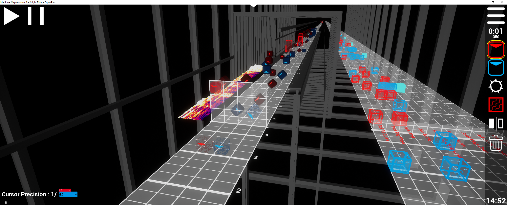

Decidí estudiar desarrollo de aplicaciones multiplataforma por 2 cosas:
- Cuando aprendí unity, me di cuenta de que me gusta programar, que no tiene nada que ver con mi anterior oficio.
- Aunque me guste programar video juegos, labrarse un buen futuro con ello es complicado, por lo que decidí programar aplicaciones para una empresa, y en mis ratos libres seguir con mis proyectos.
Actualmente tengo en mente desarrollar un juego rítmico, ya que es un género que me encanta. Sin embargo, para hacerlo bien necesito conocimientos que espero aprender durante el ciclo, como bases de datos.
Este tipo de juegos funciona de manera que la comunidad que lo juega puede añadir contenido al mismo, a través de una herramienta llamada comúnmente "mapper".
El mapper de beat saber tiene esta pinta
Suelen tener una tabla de puntuaciones, lo que hace que sea competitivo y la gente quiera mejorar. Además, no hay un "tope" de habilidad y se pueden llegar a ver cosas realmente impresionantes, como en los siguientes:
- OSU:
- Beat Saber:
Además, como puntos a favor tengo que para este tipo de juegos el arte necesario es muy poquito, por lo que podría hacerlo yo mismo. También es un tipo de juego que se centra en jugarlo, no necesito hacer una historia o cinemáticas super elaboradas, simplemente centrarme en que sea divertido y funcione bien.
Con todo esto podría decir que mi futuro va a ser programar para una empresa y en mi tiempo libre desarrollar videojuegos, es algo que me encanta y que no quiero dejar de hacer.